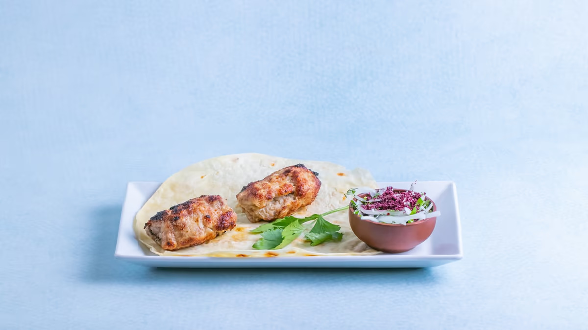

Lula Kabab

Lula Kebab is a type of Azerbaijani kebab cooked on skewers. It is made from minced meat. It is a specialty of Azerbaijani cuisine, as well as other cuisines of countries in South Caucasus, the Middle East, and Central Asia.
Ingredients
- Mutton (or minced sheep and beef meat by 50:50)
- Onion
- Sheep tail fat
- Salt
- Pepper
- Sumac
- Lavash
Steps
- The soft portion of the mutton is ground with onion using a meat grinder and mixed with pepper and salt. There should be 400 grams of onion in per 1 kilogram of minced meat. This ratio is followed, to make it stay on the skewer.
- The meat mash is mixed well and stored in a cold for an hour. Later the mince is extracted from the refrigerator and is mixed well.
- The mince is wrapped around the skewer. The mince gets slightly long form on a slightly wide skewer. Then it gets fried on coal barbecue, called a mangal. It's cooked for 10-15 minutes.
- The kebab is served between the lavash. Sprinkling sumac on it is optional.